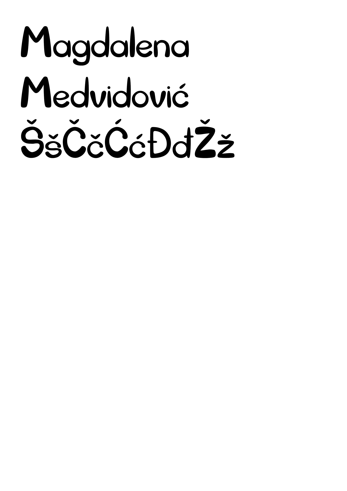
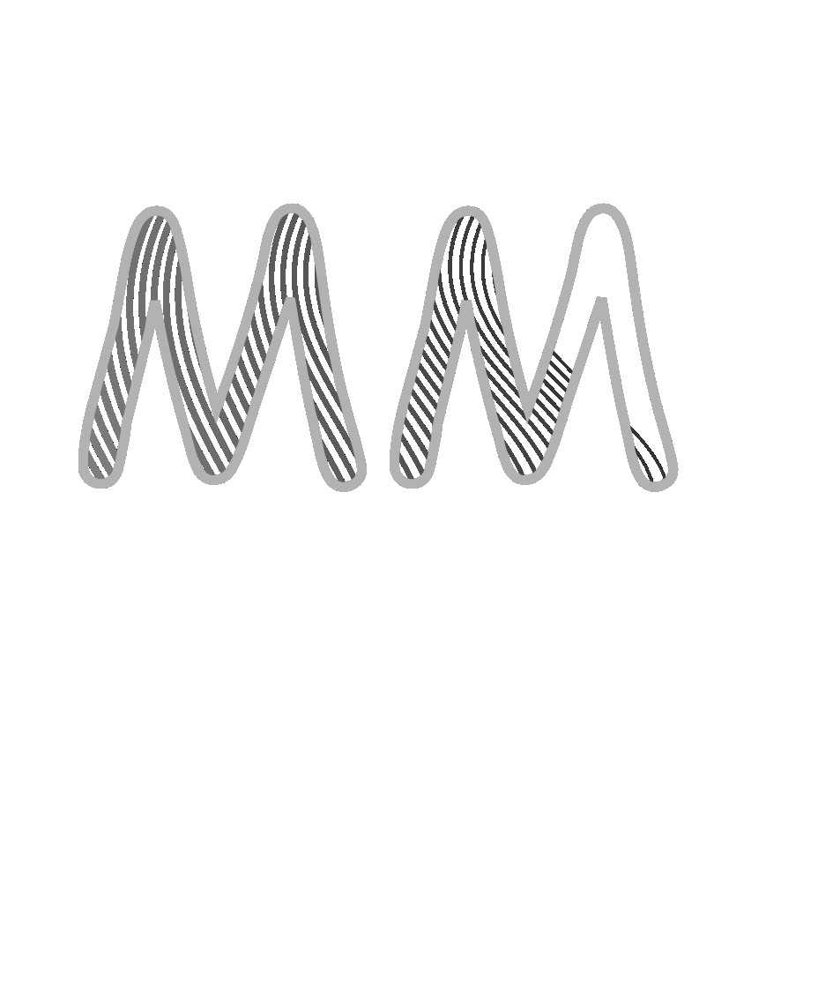
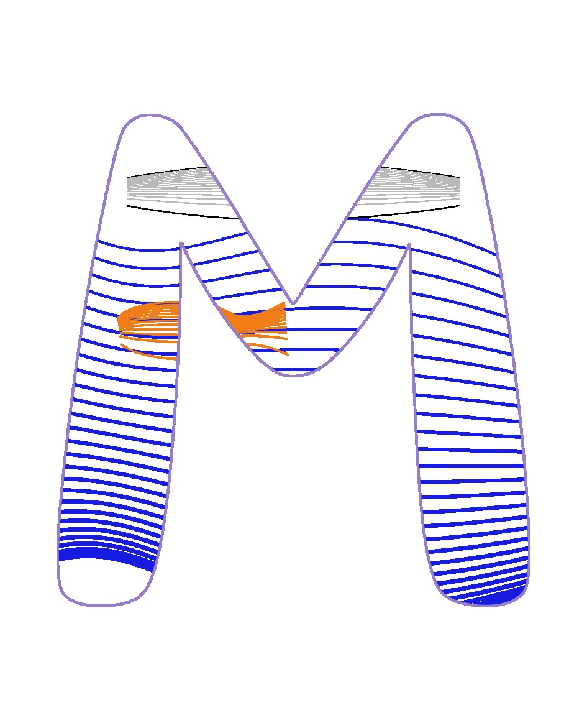
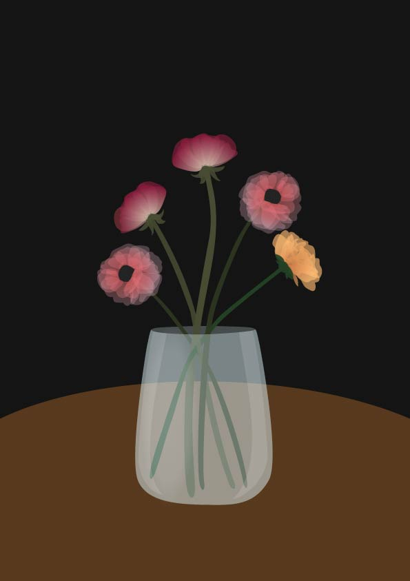
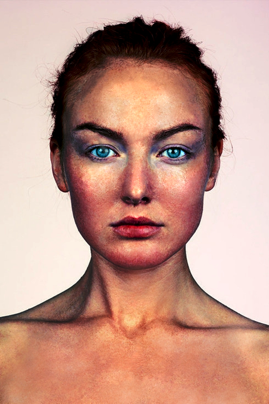
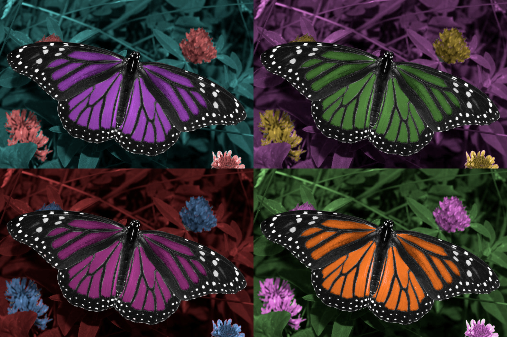
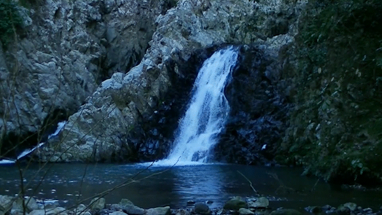
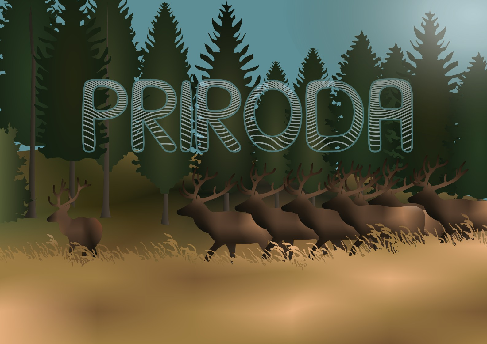
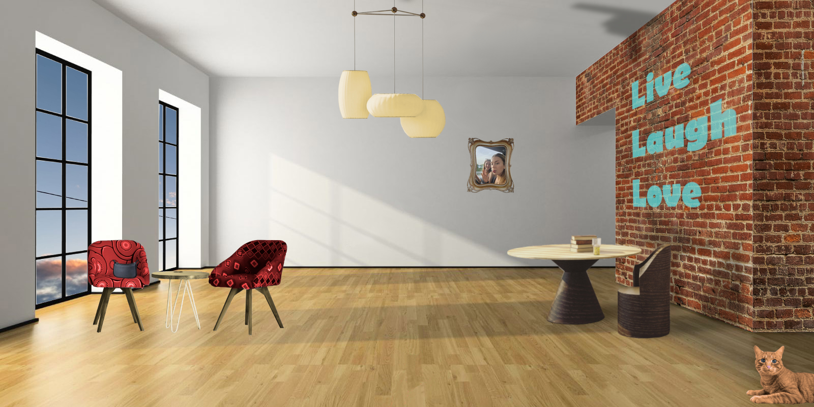

VJEŽBE
1.vježba

U ovoj sam vježbi napravila svoj font u programu FontForge.
3.vježba


U ovoj sam vježbi kombinirala font, Bezierove krivulje i interpolaciju. Koristila sam program Inkscape.
4.vježba

U ovoj sam vježbi koristila Bezierove krivulje i transparenciju kako bih kreirala sliku.
5.vježba


U ovoj sam vježbi koristila program GIMP za retuširanje.
6.vježba

U ovoj sam vježbi koristila program GIMP za koloriranje.
7.vježba
vježba 7
U ovoj sam vježbi koristila program GIMP za fotomontažu.
8.vježba

Napravila sam GIF koristeći Adobe Premiere i Adobe Photoshop
PROJEKTI
1. projekt

Koristila sam sve tehnike koje sam naučila u vježbama iz vektorske grafike.
2. projekt

Koristila sam sve tehnike koje sam naučila u vježbama iz piksel grafike.